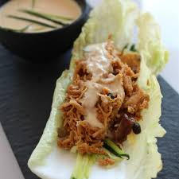

Chicken Lettuce Wrap

Description
These chicken lettuce wraps are made with shredded roast chicken, carrots, water chestnuts, and a creamy Asian-style dressing. They're easy to prepare, refreshing, and great for summer nights when you don't want to cook.
This recipe have a prep time of 10 minutes and serving size for 4 persons
Nutrition Facts(per serving)
- Calories: 365
- Carbs: 8g
- Fat: 25g
- Protein: 27g
Ingredients
- 1 deli-roasted chicken, meat removed and shredded
- ½ cup shredded carrots
- ½ cup chopped water chestnuts
- ⅓ cup Asian-style salad dressing
- ¼ cup plain Greek yogurt
- 1 pinch red pepper flakes, or to taste (Optional)
- 1 head Boston lettuce leaves
Steps
- Mix chicken, carrots, and water chestnuts together in a large bowl.
- Stir salad dressing and yogurt together in a separate bowl until smooth; pour over the chicken mixture and toss to coat.
- Spoon chicken mixture into lettuce leaves. Season with red pepper flakes.